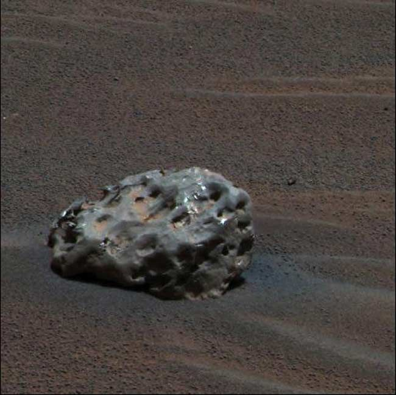

Heat Shield Rock
Discovered in January 2005, this was the first meteorite ever identified on another planet. Officially named "Meridiani Planum," it is an iron meteorite about the size of a basketball. The discovery was significant because it provided direct evidence of meteoritic material on Mars, offering clues about the history of meteorite impacts on the planet and the composition of materials in the solar system.